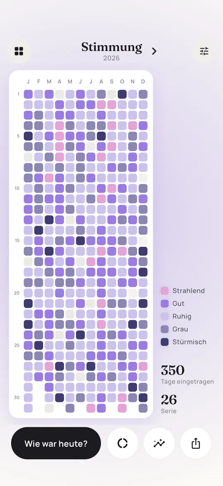
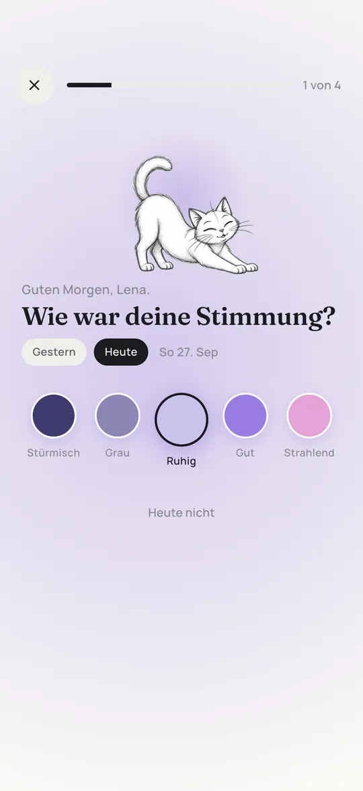
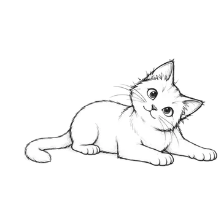

Mood Tracker Vorlage: kostenlos zum Ausdrucken (PDF)
Eine leere Jahr-in-Pixeln-Vorlage, die du heute noch ausdrucken kannst: 12 Monate, 31 Tage, eine Legende mit sechs Feldern und eine Zeile für deine Frage. Darunter erfährst du, wie du sie einrichtest, damit sie dir auch im November noch Spaß macht.
Mein Jahr in Pixeln
Ohne Jahreszahl, funktioniert also für 2026, 2027 und jedes andere Jahr. Der 29. Februar ist gestrichelt, weil es ihn nur im Schaltjahr gibt. Das nächste ist 2028.
Die Vorlage ist für den privaten Gebrauch kostenlos, ob im Bullet Journal, in der Schule oder in der Gruppe. Wenn du sie online teilst, verlinke bitte auf diese Seite statt die Datei woanders hochzuladen. So bekommen alle immer die aktuelle Version.
So funktioniert ein Jahr in Pixeln
Ein Jahr in Pixeln, im Englischen Year in Pixels, ist ein Raster mit einem kleinen Kästchen für jeden Tag des Jahres. Am Abend oder am nächsten Morgen färbst du das Kästchen des Tages nach einer Legende ein, die du am Anfang festlegst. Meistens geht es um die Stimmung, aber das Format funktioniert für alles, was sich mit einem Wort beantworten lässt: wie du geschlafen hast, ob du Sport gemacht hast, wie viel du draußen warst.
Die Idee wurde Ende der 2010er Jahre in der Bullet-Journal-Szene bekannt und ist geblieben, weil sie so wenig Aufwand macht. Es gibt nichts zu schreiben, und nach ein paar Monaten wird die Seite zu einem Bild deines Jahres, das du dir gerne ansiehst. Einzelne Tage werden unwichtig, stattdessen siehst du Jahreszeiten, Phasen und die eine Woche, die schwerer war, als du sie in Erinnerung hattest.
In fünf Schritten einrichten
- Wähle eine Frage. Schreib sie in die Zeile für die Frage, zum Beispiel Wie war meine Stimmung? oder Wie habe ich geschlafen? Eine Frage pro Raster hält das Bild lesbar. Für mehr Themen druckst du einfach eine zweite Seite.
- Lege drei bis sechs Stufen fest. Fünf passen gut zur Stimmung: mies, gedrückt, okay, gut, super. Weniger Stufen sind schneller entschieden, mehr Stufen sind genauer, aber du zögerst öfter.
- Füll die Legende vor dem ersten Tag aus. Male die Felder mit genau den Stiften aus, die du benutzen wirst, und schreib die Bedeutung daneben. Eine Legende, die du im Februar improvisierst, passt nicht mehr zu den Farben vom Januar.
- Such dir einen festen Moment. Entweder abends über den heutigen Tag oder morgens über gestern. Morgens fällt es vielen leichter, weil der Tag abgeschlossen ist und du nicht zu müde bist, um dich zu entscheiden.
- Leg die Stifte direkt dazu. Wenn du erst den richtigen Stift suchen musst, lässt du den Tag aus. Leg das Blatt ins Journal oder häng es neben das Bett, die Stifte gleich daneben.
Tipp: Lass einen Tag weiß, wenn du dich wirklich nicht erinnerst. Ein weißes Kästchen ist eine ehrliche Angabe, eine geratene Farbe nicht.
Farben und Legende
Die wichtigste Entscheidung: Skala oder Kategorien. Für Antworten mit Reihenfolge, etwa Schlaf von schlecht bis super, nimmst du eine Farbfamilie von hell nach dunkel. Dann springen dunkle Wochen sofort ins Auge. Für Antworten ohne Reihenfolge, etwa das Wetter, nimmst du deutlich verschiedene Farben.
| Stimmung | Farbe in Pixi | Klassisch im Bullet Journal |
|---|---|---|
| Stürmisch | Dunkles Violett | Rot (wütend) oder Blau (traurig) |
| Grau | Graublau | Grau (müde, leer) |
| Ruhig | Helles Lavendel | Grün (ausgeglichen) |
| Gut | Violett | Gelb (fröhlich) |
| Strahlend | Rosa | Pink (verliebt, glücklich) |
Teste jeden Stift vorher auf dem Papier, das du benutzt. Und verlass dich nicht nur auf Rot gegen Grün: Rot-Grün-Schwäche ist häufig. Mach eine der beiden Farben deutlich heller, dann bleibt das Raster für alle lesbar.
Stifte und Papier
| Stift | Gut für | Achtung |
|---|---|---|
| Filzstifte | Kräftige, gleichmäßige Farbe, schnell ausgemalt | Drücken auf dünnem Papier durch |
| Brush Pens | Viele Farben, weicher Look | Spitzen nutzen sich auf kleinen Feldern ab |
| Buntstifte | Drücken nicht durch, lassen sich mischen | Helle Töne sehen nach Monaten ähnlich aus |
| Textmarker | Sehr schnell, leuchtend | Wenige Farben, manche bleichen in der Sonne aus |
| Gelstifte | Saubere Kanten | Langsam beim Ausmalen, können verschmieren |
Für Filzstifte lohnt sich dickeres Papier mit etwa 120 g/m². Für Buntstifte reicht normales Druckerpapier.
Tipps zum Drucken
- Drucke in Originalgröße (100 Prozent). An Seite anpassen geht auch, das Raster wird dann nur etwas kleiner.
- Für ein A5-Bullet-Journal druckst du die A4-Datei mit 71 Prozent oder zwei Seiten pro Blatt und schneidest zu.
- Kein Drucker? Das PDF funktioniert auch in Notiz-Apps auf dem Tablet. Importieren und mit dem Textmarker-Werkzeug ausmalen.
- Die Vorlage gibt es auf Englisch auch im US-Letter-Format, auf der englischen Seite.
So bleibst du dran
Fast jedes Jahr in Pixeln auf Papier sieht im Januar toll aus und hat im April Lücken. Das ist normal. Das hilft:
- Zwei Tage Nachfrist. Gestern vergessen? Heute nachtragen. Danach wird die Erinnerung unzuverlässig, also weiß lassen und weitermachen.
- Nie neu anfangen. Ein halb ausgemaltes Jahr zeigt dir mehr als ein perfekter Januar im Papierkorb.
- Häng es dorthin, wo du sowieso bist. Neben die Zahnbürste, an den Kühlschrank, in das Journal, das du ohnehin aufschlägst.
- Verknüpf es mit einer Gewohnheit. Morgenkaffee, Abendtee, der Moment, in dem du das Handy ans Ladekabel hängst.
- Stell dir eine Erinnerung. Ein täglicher Wecker mit der Frage als Namen wirkt erstaunlich gut.
Papier oder App?
Beides hat seinen Platz. Papier ist ruhig, haptisch und weg vom Handy. Eine App nimmt dir die lästigen Teile ab. Ein ehrlicher Vergleich:
| Papiervorlage | Pixi App | |
|---|---|---|
| Kosten | Kostenlos | Pixi Premium: Monatsabo mit 7 Tagen gratis oder Einmalkauf |
| Erinnerung | Stellst du selbst | Eingebaut, jeden Morgen |
| Mehrere Fragen | Eine Seite pro Frage | Eine Map pro Frage, per Wischen wechseln |
| Zusammenhänge | Seiten nebeneinander legen | Statistiken und Zusammenhänge |
| Fühlt sich an wie | Ein kleines Bastelprojekt | 15 Sekunden am Morgen |


Fragen und Antworten
Ist die Mood Tracker Vorlage wirklich kostenlos?
Ja. Herunterladen, ausdrucken und so oft nutzen, wie du willst, privat, in der Schule oder in einer Gruppe. Ohne Anmeldung und ohne E-Mail-Adresse.
Kann ich die Vorlage für 2027 verwenden?
Ja. Die Vorlage hat keine Jahreszahl und funktioniert für jedes Jahr. Schreib das Jahr neben den Titel. In Jahren ohne Schalttag lässt du das gestrichelte Feld am 29. Februar einfach frei.
Gibt es die Vorlage auch für ein Stimmungstagebuch?
Die Vorlage ist im Grunde ein Stimmungstagebuch in Farben. Wie du daraus ein vollständiges Stimmungstagebuch mit Schlaf und Notizen machst, steht in unserem Ratgeber zum Stimmungstagebuch.
Kann ich zwei Dinge auf einer Vorlage tracken?
Du kannst jedes Kästchen diagonal teilen und pro Frage ein Dreieck ausmalen, zum Beispiel oben links Stimmung und unten rechts Schlaf. Das wird schnell unruhig, deshalb nehmen die meisten eine Seite pro Frage.
Was kann ich außer Stimmung tracken?
Schlaf, Energie, Träume, Sport, Lesen, Wasser, Wetter und vieles mehr. Ideen mit passenden Stufen findest du bei unseren Mood Tracker Ideen.

Geschrieben von Caspar Baumeister. Ich bin Indie-Entwickler in Berlin und baue Pixi allein. Ich lese jede Nachricht. Wenn hier etwas unklar ist oder du eine Idee für die App hast, schreib mir: @casparbuilds auf X oder per E-Mail.